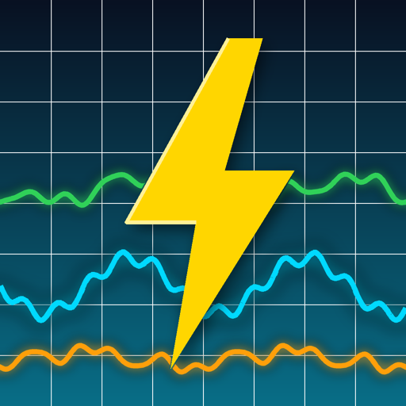
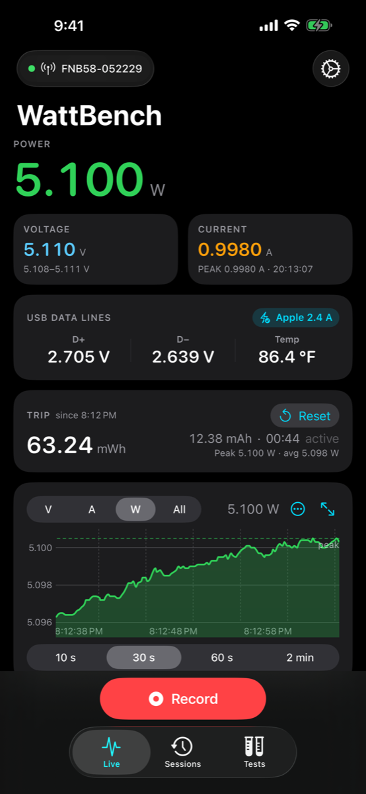
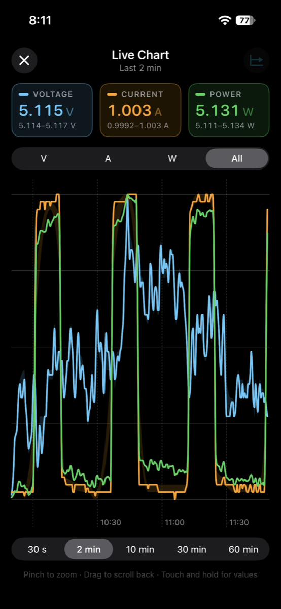
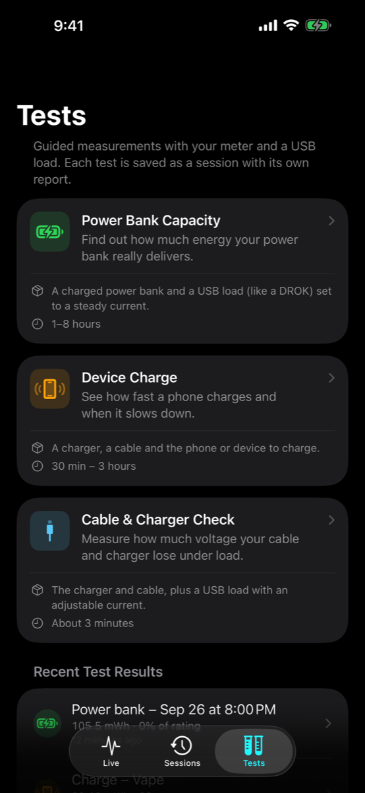
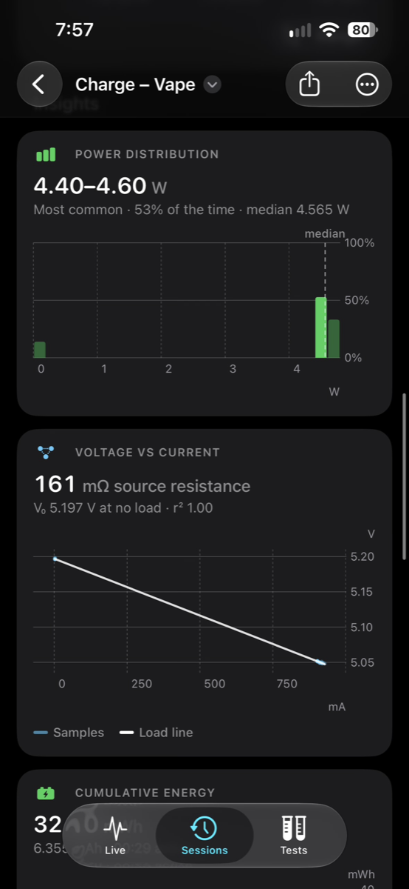

WattBenchWattBench
Live power meter for the FNIRSI FNB58, on your iPhone.


WattBench turns your iPhone into a wireless display, data logger and test bench for the FNIRSI FNB58 USB power meter. Connect over Bluetooth and watch voltage, current and power update in real time, start a recording to capture a whole charge cycle, and review or export every sample later. No account, no ads, no analytics, no network access — everything stays on your phone.


See it work
A real FNB58 and a real iPhone in one take. On the left, a second phone films the desk; on the right is the iPhone's own screen recording of the same moments. Watch the meter's screen and the app show the same numbers.
Built for the bench
Live readouts
Big, glanceable voltage, current and power with peak hold, and a full-screen chart of V, A, W or all three — up to the last 60 minutes, in portrait or landscape.
USB data lines & chargers
D+ and D− voltages and the meter's temperature, with the charger's signalling named for you: Quick Charge, USB PD, Apple, Samsung or BC 1.2.
Guided tests
Power bank capacity against its label, a phone's charge phases, and a cable & charger check that grades resistance with a USB load.
Recordings you can trust
Every sample is written to disk as it arrives. Recordings keep running with the screen locked and survive a crash or a Bluetooth drop; dropouts show up as gaps, never hidden.
Lock Screen & Apple Watch
Watts, volts and amps on the Lock Screen, in the Dynamic Island and in your Apple Watch's Smart Stack while you record.
Reports, compare & PDF
Zoomable session charts, range statistics, power histogram, voltage-vs-current, cumulative energy, temperature — compare up to four sessions and export PDF or CSV.
Smart alerts & markers
Voltage, current, power, temperature and "fast charge lost" alerts, plus automatic markers when the charger changes mode or voltage.
Trip counter
Energy (Wh) and capacity (mAh) accumulate from the moment you plug in — no recording needed.
Private by design
No account, no analytics, no network requests. Bluetooth is used only to talk to your meter. Privacy policy.
Quick start
- On the FNB58, open its settings menu and turn Bluetooth on.
- Open WattBench and tap Connect. Allow Bluetooth when iOS asks. Your meter appears within a few seconds; tap it. Next time, WattBench reconnects to it on its own.
- Plug the device under test into the meter. The Live tab shows voltage, current and power immediately and the trip counter starts adding up energy and capacity.
- Tap Record to capture a session. Name it, add tags or an auto-stop rule, then leave the phone locked — the recording continues in the background.
- Tap Stop. Find the session under Sessions, open its report, and share it as CSV.
No meter yet? Tap Connect, then Try Demo Data to explore every screen with simulated readings. The full user guide walks through every screen and setting.
FAQ
Which meters work?
The FNIRSI FNB58 over Bluetooth Low Energy. Other FNIRSI meters may share the protocol, but only the FNB58 has been verified. The free desktop web monitor (FNB58-MacOS on GitHub) also supports the FNB48, FNB48S and C1 over USB.
What does the "USB data lines" card show?
D+ and D− are the USB data wires chargers use to announce fast charging; WattBench reads their voltages and the meter's temperature over Bluetooth and names the charger's signalling when it recognises it. USB PD is negotiated on a separate wire the meter doesn't report, so WattBench infers it from a raised voltage. See USB data lines in the guide.
Does recording drain my battery?
Bluetooth stays active in the background only while WattBench is connected to a meter, so a recording continues with the screen locked. Disconnect when you are done to save battery. WattBench never scans for meters in the background.
What happens if the app crashes mid-recording?
Samples are written to disk as they arrive. On the next launch you are offered the samples recorded so far — keep them as a session or discard them.
Where are my recordings stored?
On your phone, in WattBench's own Documents folder (visible in the Files app under On My iPhone → WattBench). Nothing is uploaded anywhere.
Is there a Mac or Linux version?
The open-source FNB58-MacOS project is a desktop web monitor (Python/Flask) that talks to the meter over USB or Bluetooth from a computer and adds D+/D− scope, protocol triggering and spectrum views. See the README.
Something isn't working
Open Settings → Diagnostics in the app to see the Bluetooth log and raw frames, then open an issue with what you see.